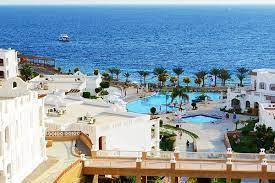

التاريخ
شيدت مدينة شرم الشيخ عام 1968، وتشتهر باسم مدينة السلام. وتطورت المدينة منذ ذلك التاريخ بشكل سريع حتى أصبحت من أشهر المدن السياحية في سيناء والعالم، وتعد واحدة من أجمل أربع مدن في العالم طبقاً لتصنيف البي بي سي لعام 2005. كما أدى تحول المدينة إلى النظم الحديثة في المعمار والترفيه والأمان والخدمة الفندقية لتأهيلها للفوز بجائزة منظمة اليونسكو لاختيارها ضمن أفضل خمس مدن سلام على مستوى العالم من بين 400 مدينة عالمية

شيدت مدينة شرم الشيخ عام 1968، وتشتهر باسم مدينة السلام. وتطورت المدينة منذ ذلك التاريخ بشكل سريع حتى أصبحت من أشهر المدن السياحية في سيناء والعالم، وتعد واحدة من أجمل أربع مدن في العالم طبقاً لتصنيف البي بي سي لعام 2005. كما أدى تحول المدينة إلى النظم الحديثة في المعمار والترفيه والأمان والخدمة الفندقية لتأهيلها للفوز بجائزة منظمة اليونسكو لاختيارها ضمن أفضل خمس مدن سلام على مستوى العالم من بين 400 مدينة عالمية
محمية رأس محمد
تقع محمية شبه جزيرة رأس محمد عند التقاء خليج السويس وخليج العقبة في جنوب سيناء على بعد نحو 12 كم من مدينة شرم الشيخ. تعتبر المحمية من أشهر معالم سيناء على الإطلاق، وتم إعلانها محمية طبيعية في عام 1983 وهى مصنفة كمحمية تراث عالمي وتبلغ مساحتها 850 كم، وتضم جزيرتي تيران وصنافير، وتمثل الحافة الشرقية للمحمية حائطاً صخرياً مع مياه الخليج الذي توجد به الشعاب المرجانية، وتفصل قناة المانجروف بين شبه جزيرة رأس محمد وبين جزيرة البعيرة بطول حوالي 250 متر. تتميز منطقة رأس محمد بالشواطئ المرجانية الموجودة في أعماق المحيط المائي لرأس محمد والأسماك الملونة والسلاحف البحرية المهددة بالانقراض والأحياء المائية النادرة، وتحيط الشعاب المرجانية برأس محمد من جميع جوانبها البحرية، ويوجد أسفل شبه الجزيرة العديد من الكهوف المائية. وتعتبر المحمية موطناً للعديد من الطيور والحيوانات والحشرات، كما يوجد بها أنواع عديدة من الحيوانات البحرية فضلاً عن نحو 150 نوع من الشعاب المرجانية ويوجد في المحمية أيضاً العديد من الحفريات التي تتراوح أعمارها بين 75 ألف سنة و20 مليون سنة. وتعد المحمية من أجمل أماكن الغطس في العالم ومن أهم المزارات بها: منطقة البركة المسحورة والتي تعتمد على حركة المد والجزر، منطقة الزلازل القديمة، منطقة المانجروف، نقاط مشاهدة الشعاب المرجانية والطيور بالإضافة إلى المنطقة الشاطئية المخصصة للسباحة.
تقع محمية شبه جزيرة رأس محمد عند التقاء خليج السويس وخليج العقبة في جنوب سيناء على بعد نحو 12 كم من مدينة شرم الشيخ. تعتبر المحمية من أشهر معالم سيناء على الإطلاق، وتم إعلانها محمية طبيعية في عام 1983 وهى مصنفة كمحمية تراث عالمي وتبلغ مساحتها 850 كم، وتضم جزيرتي تيران وصنافير، وتمثل الحافة الشرقية للمحمية حائطاً صخرياً مع مياه الخليج الذي توجد به الشعاب المرجانية، وتفصل قناة المانجروف بين شبه جزيرة رأس محمد وبين جزيرة البعيرة بطول حوالي 250 متر. تتميز منطقة رأس محمد بالشواطئ المرجانية الموجودة في أعماق المحيط المائي لرأس محمد والأسماك الملونة والسلاحف البحرية المهددة بالانقراض والأحياء المائية النادرة، وتحيط الشعاب المرجانية برأس محمد من جميع جوانبها البحرية، ويوجد أسفل شبه الجزيرة العديد من الكهوف المائية. وتعتبر المحمية موطناً للعديد من الطيور والحيوانات والحشرات، كما يوجد بها أنواع عديدة من الحيوانات البحرية فضلاً عن نحو 150 نوع من الشعاب المرجانية ويوجد في المحمية أيضاً العديد من الحفريات التي تتراوح أعمارها بين 75 ألف سنة و20 مليون سنة. وتعد المحمية من أجمل أماكن الغطس في العالم ومن أهم المزارات بها: منطقة البركة المسحورة والتي تعتمد على حركة المد والجزر، منطقة الزلازل القديمة، منطقة المانجروف، نقاط مشاهدة الشعاب المرجانية والطيور بالإضافة إلى المنطقة الشاطئية المخصصة للسباحة.